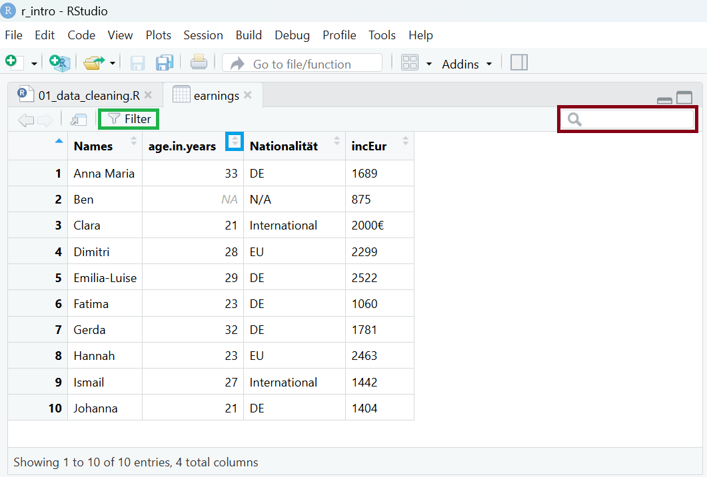

repo_url <- "https://github.com/rintro-fuhagen-econpolicy/rintro-fuhagen-econpolicy.github.io/archive/refs/heads/main.zip"
download.file(repo_url, destfile = "repo.zip")
unzip("repo.zip")
file.copy("rintro-fuhagen-econpolicy.github.io-main/data/raw/earnings_data",
"data/raw",
recursive = TRUE)
unlink("repo.zip")
unlink("rintro-fuhagen-econpolicy.github.io-main", recursive = TRUE)
rm(repo_url)4 Daten importieren
Bisher haben wir Objekte in R selbst erstellt oder in R Packages enthaltene Datensätze verwendet. In diesem Abschnitt lernen wir, wie man Datensätze in R importiert. Dazu erstellen wir zuerst in dem Ordner unseres R-Projects einen Datenordner und folgende Unterordner:
r_intro/
├── data/
│ ├── raw/ # Originaldaten
│ └── processed/ # Bearbeitete DatenAnschließend laden wir ein Set an unterschiedlichen Datensatz-Arten aus dem Github-Ordner des Kurses in den raw Ordner, in dem wir entweder alle Dateien in diesem Github-Ordner manuell herunterladen, oder den folgenden Code in R ausführen:
4.1 Datenformate
In der Praxis begegnen dir verschiedene Datenformate, die mit unterschiedlichen Funktionen in R eingelesen werden. Tabelle 4.1 gibt einen Überblick über die gebräuchlichsten Formate.
| Dateiformat | Typisch für | Package | Lesefunktion |
|---|---|---|---|
| csv | Allgemein | readr (tidyverse) | read_csv() |
| rds | R | readr (tidyverse) | read_rds() |
| txt | Allgemein | readr (tidyverse) | read_delim() |
| xlsx | MS Office | readxl | read_excel() |
| dta | Stata | haven | read_dta() |
4.2 Daten einlesen
4.2.1 CSV-Dateien
Das CSV-Format (Comma-Separated Values) speichert tabellarische Daten als Text, wobei jede Zeile eine Beobachtung und jede Spalte einen Wert enthält, getrennt durch Kommata oder andere Trennzeichen. Beim Import in R müssen wir auf das korrekte Trennzeichen achten, damit die Zahlen korrekt eingelesen werden.
CSV-Dateien können mit der Funktion read_csv() aus dem tidyverse/readr Package eingelesen werden:
earnings <- read_csv("data/raw/earnings_data/earnings.csv")
earnings
#> # A tibble: 10 × 4
#> Names age.in.years Nationalität `inc in Eur`
#> <chr> <dbl> <chr> <chr>
#> 1 Anna Maria 33 DE 1689
#> 2 Ben NA N/A 875
#> 3 Clara 21 International 2000€
#> 4 Dimitri 28 EU 2299
#> 5 Emilia-Luise 29 DE 2522
#> 6 Fatima 23 DE 1060
#> # ℹ 4 more rowsInternational werden die einzelnen Spalten mit einem Komma (,) getrennt. Dies ist auch das Default-Trennzeichen bei read_csv(). Da in der deutschen Sprache dieses als Zeichen für Dezimalstellen verwendet wird, wird hier das Semikolon/der Strichpunkt (;) als Trennzeichen verwendet. Verwenden wir das falsche Trennzeichen beim Einlesen von CSV-Dateien mit diesem Trennzeichen, werden die Daten falsch eingelesen:
read_csv("data/raw/earnings_data/earnings_de.csv")
#> # A tibble: 10 × 1
#> `Names;age.in.years;Nationalität;inc in Eur`
#> <chr>
#> 1 Anna Maria;33;DE;1689
#> 2 Ben;NA;N/A;875
#> 3 Clara;21;International;2000€
#> 4 Dimitri;28;EU;2299
#> 5 Emilia-Luise;29;DE;2522
#> 6 Fatima;23;DE;1060
#> # ℹ 4 more rowsStattdessen müssen wir bei einer solchen Encodierung read_csv2() verwenden:
read_csv2("data/raw/earnings_data/earnings_de.csv")
#> # A tibble: 10 × 4
#> Names age.in.years Nationalität `inc in Eur`
#> <chr> <dbl> <chr> <chr>
#> 1 Anna Maria 33 DE 1689
#> 2 Ben NA N/A 875
#> 3 Clara 21 International 2000€
#> 4 Dimitri 28 EU 2299
#> 5 Emilia-Luise 29 DE 2522
#> 6 Fatima 23 DE 1060
#> # ℹ 4 more rows
WarnungHäufige Probleme mit CSV-Dateien
-
Trennzeichen:
read_csv("datei.csv")bei,als Trennzeichen,read_csv2("datei.csv")bei; -
Encoding: Bei Problemen mit Sonderzeichen muss das Encoding spezifiziert werden, etwa
read_csv("datei.csv", locale = locale(encoding = "latin1")) -
Dezimaltrennzeichen: Ebenfalls über das
localeArgument,locale = locale(decimal_mark = ",") -
Falsche Spaltentypen: Mit
col_typesspezifizieren
4.2.2 RDS-Dateien
RDS ist ein R-spezifisches Format, das ein einzelnes R-Objekt speichert. RDS speichert Objekte in nativer R-Struktur, inklusive Datentypen, Faktoren, Datum/Zeit und sogar komplexer Objekte wie Modelle, wodurch beim Einlesen keine Umwandlungen nötig sind. RDS-Dateien sind oft kleiner und schneller zu lesen als Textdateien, da keine Konvertierung von und zu Text nötig ist.
Wir können RDS-Dateien mit read_rds() einlesen:
earnings <- read_rds("data/raw/earnings_data/earnings.rds")4.2.3 Excel-Spreadsheets
Um Excel-Spreadsheets einzulesen benötigt man in R ein zusätzliches Package (readxl). Mit der Funktion read_excel() können sowohl .xlsx als auch .xls Dateien eingeladen werden.
library(readxl)
read_excel("data/raw/earnings_data/earnings.xlsx")
#> # A tibble: 10 × 4
#> Names age.in.years Nationalität `inc in Eur`
#> <chr> <dbl> <chr> <chr>
#> 1 Anna Maria 33 DE 1689
#> 2 Ben NA N/A 875
#> 3 Clara 21 International 2000€
#> 4 Dimitri 28 EU 2299
#> 5 Emilia-Luise 29 DE 2522
#> 6 Fatima 23 DE 1060
#> # ℹ 4 more rowsPer Default importiert diese Funktion immer den Datensatz aus dem ersten Tabellenblatt. Mit dem Argument sheet = ... können wir das Tabellenblatt wählen. Möglich ist sowohl, die Nummer des Tabellenblatts als Zahl anzugeben, als auch den Namen des Tabellenblatts in Anführungszeichen anzugeben. Mit dem Argument range = ... können wir außerdem den Bereich des Tabellenblatts angeben, den wir einlesen wollen:
read_excel("data/raw/earnings_data/earnings.xlsx", sheet = 1, range = "A1:C3")
#> # A tibble: 2 × 3
#> Names age.in.years Nationalität
#> <chr> <dbl> <chr>
#> 1 Anna Maria 33 DE
#> 2 Ben NA N/AUm einen Überblick über die Tabellenblätter eines Spreadsheets zu bekommen, ist die Funktion excel_sheets() im readxl Package hilfreich:
excel_sheets("data/raw/earnings_data/earnings.xlsx")
#> [1] "Sheet1"4.2.4 Stata-Datensätze
Stata ist eine alternative Statistiksoftware, die in den Wirtschaftswissenschaften immer noch häufig verwendet wird. Für das Speichern von Datensätzen verwendet Stata das .dta-Format. Dieses speichert sowohl die Daten als auch Variablen- und Wertelabels, sodass beim Einlesen in R oder Stata die Struktur, Kategorien und Labels erhalten bleiben.
Für das Einlesen von Stata-Datensätzen verwenden wir das haven Package und die Funktion ``:
library(haven)
read_dta("data/raw/earnings_data/earnings.dta")
#> # A tibble: 10 × 4
#> names age nationality income
#> <chr> <dbl> <dbl+lbl> <dbl>
#> 1 Anna Maria 33 1 [DE] 1689
#> 2 Ben NA NA 875
#> 3 Clara 21 3 [International] 2000
#> 4 Dimitri 28 2 [EU] 2299
#> 5 Emilia-Luise 29 1 [DE] 2522
#> 6 Fatima 23 1 [DE] 1060
#> # ℹ 4 more rowsIn Stata werden Faktorvariablen wie in diesem Fall nationality numerisch abgespeichert und mit Labels versehen. Um diese in R miteinzulesen, können wir haven::as_factor() verwenden:
read_dta("data/raw/earnings_data/earnings.dta") |>
mutate(nationality = as_factor(nationality))
#> # A tibble: 10 × 4
#> names age nationality income
#> <chr> <dbl> <fct> <dbl>
#> 1 Anna Maria 33 DE 1689
#> 2 Ben NA <NA> 875
#> 3 Clara 21 International 2000
#> 4 Dimitri 28 EU 2299
#> 5 Emilia-Luise 29 DE 2522
#> 6 Fatima 23 DE 1060
#> # ℹ 4 more rows
TippAutomatisiertes Faktor-Einlesen bei dta
Damit wir nicht bei jeder Variable im Datensatz überprüfen müssen, ob es sich um eine Label-Variable handelt, können wir auch folgenden Code verwenden, der über alle Variable (across(.)) die Funktion as_factor() anwendet, falls es sich dabei um eine Label-Variable handelt (where(is.labelled)):
read_dta("data/raw/earnings_data/earnings.dta") |>
mutate(across(where(is.labelled), as_factor))4.2.5 Weitere Dateiformate
Die Funktion read_delim() kann in R verwendet werden, um Datensätze mit beliebigem Trennzeichen einzulesen. Sie versucht dabei, das Trennzeichen automatisch zu erkennen. Wir können damit etwa eine Textdatei (.txt) einlesen:
read_delim("data/raw/earnings_data/earnings_tab.txt")
#> # A tibble: 10 × 4
#> Names age.in.years Nationalität `inc in Eur`
#> <chr> <dbl> <chr> <chr>
#> 1 Anna Maria 33 DE 1689
#> 2 Ben NA N/A 875
#> 3 Clara 21 International 2000€
#> 4 Dimitri 28 EU 2299
#> 5 Emilia-Luise 29 DE 2522
#> 6 Fatima 23 DE 1060
#> # ℹ 4 more rowsBei diesem Text-File wird der Tabulator als Trennzeichen verwendet und von R auch korrekt beim Einlesen erkannt. Wir können das Trennzeichen aber auch explizit über das delim = value-Argument spezifizieren:
read_delim("data/raw/earnings_data/earnings_tab.txt", delim = "\t")
WarnungProbleme mit Trennzeichen
Bei TXT-Dateien oder anderen allgemeinen Datensätzen kann es jedoch immer wieder zu Problemen kommen, wenn das Trennzeichen auch innerhalb einer Variable verwendet wird. Wurde zum Beispiel ein Datensatz als TXT-Datei mit Leerzeichen als Trennzeichen abgespeichert, so führt dies beim Einlesen zu folgendem Problem:
read_delim("data/raw/earnings_data/earnings_space.txt", delim = " ")
#> # A tibble: 10 × 6
#> Names age.in.years Nationalität inc `in` Eur
#> <chr> <chr> <chr> <chr> <chr> <lgl>
#> 1 Anna Maria 33 "DE" "1689\r" NA
#> 2 Ben <NA> N/A "875\r" <NA> NA
#> 3 Clara 21 International "2000€\r" <NA> NA
#> 4 Dimitri 28 EU "2299\r" <NA> NA
#> 5 Emilia-Luise 29 DE "2522\r" <NA> NA
#> 6 Fatima 23 DE "1060\r" <NA> NA
#> # ℹ 4 more rowsDa die erste Beobachtung der Namensvariable (Anna Maria) und die Variablenbezeichnung inc in Eur Leerzeichen enthalten, werden hier die Werte in die nächsten Spalten verschoben. Daher ist es ratsam beim Exportieren von eigenen Datensätzen auf Formate zurückzugreifen, die von R problemlos richtig gelesen werden (etwa RDS oder CSV).
4.3 Daten ansehen
Nach dem Import von Daten sollte man sich den Datensatz immer zunächst genau ansehen, um Struktur, Datentypen und mögliche Probleme frühzeitig zu erkennen. Bisher haben wir uns den Datensatz durch Eingabe des Objektnamens anzeigen lassen. Sollte ein Datensatz als Dataframe und nicht als Tibble geladen sein, hat dies den Nachteil, dass hier der gesamte Datensatz in der Konsole ausgegeben wird. Bei kleinen Datensätzen macht das kaum einen Unterschied, aber bei größeren Daten kann die vollständige Ausgabe sehr unübersichtlich werden und die Konsole „überfluten“.
Es ist daher besser, sich in der Konsole nur Teile eines Datensatzes anzeigen zu lassen. In Base R bieten sich dafür Funktionen wie head() und tail() (Anzeigen der ersten bzw. letzten Zeilen):
head(earnings, n = 5)
#> # A tibble: 5 × 4
#> Names age.in.years Nationalität `inc in Eur`
#> <chr> <int> <chr> <chr>
#> 1 Anna Maria 33 DE 1689
#> 2 Ben NA N/A 875
#> 3 Clara 21 International 2000€
#> 4 Dimitri 28 EU 2299
#> 5 Emilia-Luise 29 DE 2522Im tidyverse Package bietet die Funktion glimpse() eine kompakte Übersicht:
glimpse(earnings)
#> Rows: 10
#> Columns: 4
#> $ Names <chr> "Anna Maria", "Ben", "Clara", "Dimitri", "Emilia-Luise…
#> $ age.in.years <int> 33, NA, 21, 28, 29, 23, 32, 23, 27, 21
#> $ Nationalität <chr> "DE", "N/A", "International", "EU", "DE", "DE", "DE", …
#> $ `inc in Eur` <chr> "1689", "875", "2000€", "2299", "2522", "1060", "1781"…Neben den ersten Werten in jeder Variable sehen wir auch, dass unser Datensatz aus 10 Zeilen und 4 Spalten besteht, sowie den Datentyp der jeweiligen Variablen (z.b. character bei earnings$Names).
Um uns den ganzen Datensatz anzusehen, können wir uns den Datensatz in einem separaten Fenster öffnen. Dies geschieht entweder durch Doppelklick auf den Datensatz im Environment-Fenster oder durch die Funktionen View() (Base R) bzw. view() (tidyverse):
view(earnings)Dadurch öffnet sich im R-Script-Panel ein neues Fenster mit dem Datensatz (Abbildung 4.1). Um uns den Datensatz genauer anzusehen, haben wir auch die Möglichkeit, Daten zu filtern (grüne Markierung), zu suchen (rote Markierung) oder den Datensatz anhand einer bestimmten Variable zu sortieren (blaue Markierung).

4.4 Daten bereinigen
Nachdem wir einen Datensatz importiert haben müssen wir diesen häufig bereinigen, bevor wir mit der Analyse oder Weiterverarbeitung starten. Wesentliche Punkte sind dabei die Vereinheitlichung der Variablennamen, eine Korrektur falscher Datentypen und die Identifizierung fehlender Werte.
Durch einen ersten Blick auf die Daten bekommen wir schnell einen Überblick, welche Probleme im Datensatz bestehen:
#> # A tibble: 10 × 4
#> Names age.in.years Nationalität `inc in Eur`
#> <chr> <dbl> <chr> <chr>
#> 1 Anna Maria 33 DE 1689
#> 2 Ben NA N/A 875
#> 3 Clara 21 International 2000€
#> 4 Dimitri 28 EU 2299
#> 5 Emilia-Luise 29 DE 2522
#> 6 Fatima 23 DE 1060
#> 7 Gerda 32 DE 1781
#> 8 Hannah 23 EU 2463
#> 9 Ismail 27 International 1442
#> 10 Johanna 21 DE 1404Der earnings-Datensatz zeigt dabei mehrere typische Probleme: - Fehlende Werte: In der Variable Nationalität wurde ein fehlender Wert nicht als NA erkannt, sondern als Text eingelesen (N/A). - Variablennamen: Die Namen sind uneinheitlich und enthalten Großbuchstaben, Sonderzeichen, Leerzeichen oder Punkte – sie widersprechen damit den Best Practices zur Namensgebung. - Datentypen: Die Variable incEur wurde als character eingelesen, sollte aber eigentlich numerisch sein.
Diese Probleme können wir mit den in Kapitel 3 vorgestellten Operationen lösen. Es ist jedoch sinnvoll, den Einleseprozess so anzupassen, dass die Daten direkt korrekt eingelesen werden.
4.4.1 Fehlende Werte
R interpretiert beim CSV-Import standardmäßig nur leere Felder oder den String NA als fehlende Werte (NA). In unserem Datensatz fehlt jedoch auch die zweite Beobachtung in Nationalität, die als N/A codiert wurde. Mit read_csv() können wir über das Argument na = ... festlegen, welche Werte als NA eingelesen werden sollen:
earnings <- read_csv("data/raw/earnings_data/earnings.csv", na = c("", "NA", "N/A"))
earnings
#> # A tibble: 10 × 4
#> Names age.in.years Nationalität `inc in Eur`
#> <chr> <dbl> <chr> <chr>
#> 1 Anna Maria 33 DE 1689
#> 2 Ben NA <NA> 875
#> 3 Clara 21 International 2000€
#> 4 Dimitri 28 EU 2299
#> 5 Emilia-Luise 29 DE 2522
#> 6 Fatima 23 DE 1060
#> 7 Gerda 32 DE 1781
#> 8 Hannah 23 EU 2463
#> 9 Ismail 27 International 1442
#> 10 Johanna 21 DE 14044.4.2 Variablennamen
Variablen sollten – wie alle R-Objekte – aussagekräftig und einheitlich benannt werden. In diesem Kurs orientieren wir uns dabei an der snake_case-Konvention. Die ursprünglichen Variablennamen widersprechen dieser Logik, da sie Großbuchstaben, Sonderzeichen, Leerzeichen oder Punkte als Trennzeichen enthalten. Außerdem transportieren manche Namen zu viele Informationen: Dass das Alter in Jahren oder das Einkommen in Euro gemessen wird, ist in der Regel aus dem Kontext des Datensatzes klar und somit redundant.
Um Variablennamen gezielt zu ändern, können wir rename(new_name = old_name) verwenden. Enthält ein Variablenname Leerzeichen, muss er in Backticks (`) gesetzt werden:
earnings <- earnings |>
rename(
name = Names,
age = age.in.years,
nationality = Nationalität,
income = `inc in Eur`
)
earnings
#> # A tibble: 10 × 4
#> name age nationality income
#> <chr> <dbl> <chr> <chr>
#> 1 Anna Maria 33 DE 1689
#> 2 Ben NA <NA> 875
#> 3 Clara 21 International 2000€
#> 4 Dimitri 28 EU 2299
#> 5 Emilia-Luise 29 DE 2522
#> 6 Fatima 23 DE 1060
#> 7 Gerda 32 DE 1781
#> 8 Hannah 23 EU 2463
#> 9 Ismail 27 International 1442
#> 10 Johanna 21 DE 1404Bei Datensätzen mit vielen Variablen ist eine einzelne Umbenennung mühsam. Hier kann die Funktion janitor::clean_names() (aus dem gleichnamigen Paket) helfen, alle Variablennamen automatisch in snake_case zu übersetzen. Einzelne Anpassungen lassen sich anschließend bei Bedarf noch vornehmen:
read_csv("data/raw/earnings_data/earnings.csv", na = c("", "NA", "N/A")) |>
janitor::clean_names(case = "snake")
#> # A tibble: 10 × 4
#> names age_in_years nationalitat inc_in_eur
#> <chr> <dbl> <chr> <chr>
#> 1 Anna Maria 33 DE 1689
#> 2 Ben NA <NA> 875
#> 3 Clara 21 International 2000€
#> 4 Dimitri 28 EU 2299
#> 5 Emilia-Luise 29 DE 2522
#> 6 Fatima 23 DE 1060
#> 7 Gerda 32 DE 1781
#> 8 Hannah 23 EU 2463
#> 9 Ismail 27 International 1442
#> 10 Johanna 21 DE 14044.4.3 Datentypen
Wenn Variablen im Originaldatensatz nicht sauber codiert sind, kann R sie im falschen Typ einlesen. In unserem Beispiel wurde das Einkommen bei der dritten Beobachtung mit einem Euro-Zeichen versehen, sodass R die Variable als character interpretiert. Eine direkte Umwandlung mit as.numeric() würde diese Beobachtung in NA recodieren, da sie keinen reinen Zahlenwert enthält:
earnings |>
mutate(income = as.numeric(income))
#> Warning: There was 1 warning in `mutate()`.
#> ℹ In argument: `income = as.numeric(income)`.
#> Caused by warning:
#> ! NAs durch Umwandlung erzeugt
#> # A tibble: 10 × 4
#> name age nationality income
#> <chr> <dbl> <chr> <dbl>
#> 1 Anna Maria 33 DE 1689
#> 2 Ben NA <NA> 875
#> 3 Clara 21 International NA
#> 4 Dimitri 28 EU 2299
#> 5 Emilia-Luise 29 DE 2522
#> 6 Fatima 23 DE 1060
#> 7 Gerda 32 DE 1781
#> 8 Hannah 23 EU 2463
#> 9 Ismail 27 International 1442
#> 10 Johanna 21 DE 1404Um dies zu vermeiden, nutzen wir die tidyverse-Funktion parse_number(), die alle nicht-numerischen Zeichen entfernt und die Zahlen extrahiert:
earnings <- earnings |>
mutate(income = parse_number(income))
earnings
#> # A tibble: 10 × 4
#> name age nationality income
#> <chr> <dbl> <chr> <dbl>
#> 1 Anna Maria 33 DE 1689
#> 2 Ben NA <NA> 875
#> 3 Clara 21 International 2000
#> 4 Dimitri 28 EU 2299
#> 5 Emilia-Luise 29 DE 2522
#> 6 Fatima 23 DE 1060
#> 7 Gerda 32 DE 1781
#> 8 Hannah 23 EU 2463
#> 9 Ismail 27 International 1442
#> 10 Johanna 21 DE 1404